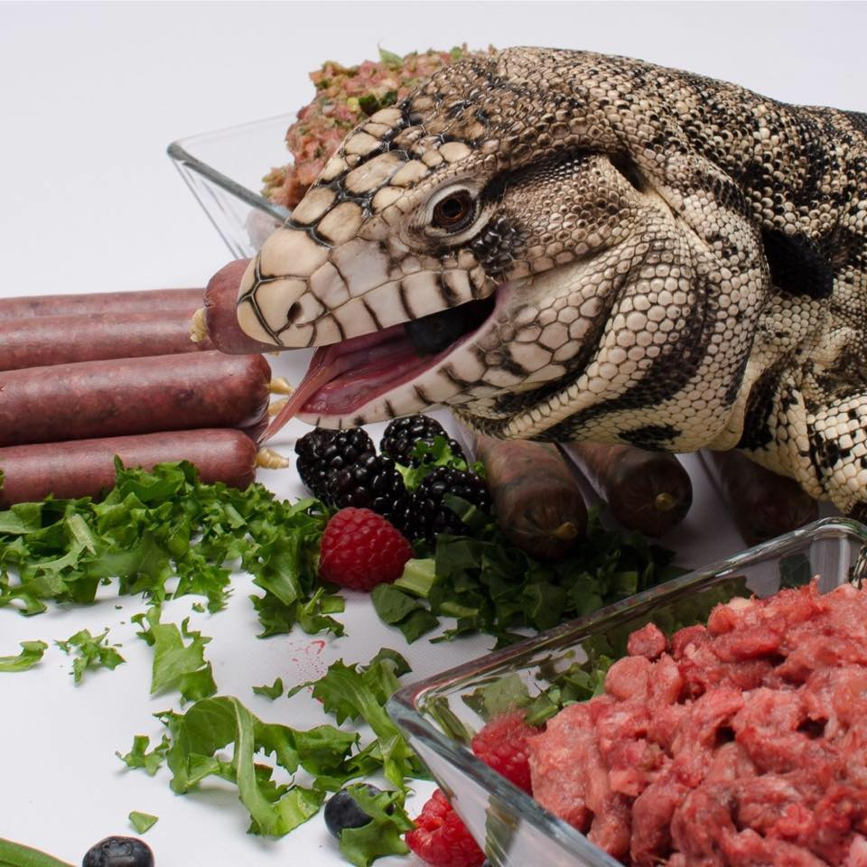

ARGENTINSKI TEGU
OSNOVNI PODACI I BIOLOGIJA
Znanstveni naziv: Salvator merianae
Porijeklo: Južna Amerika (Argentina, Brazil, Urugvaj)
Životni vijek: 15 - 20 godina u zatočeništvu
Veličina mužjaka: 120 - 150 cm (rekordni primjerci do 180 cm)
Veličina ženki: 90 - 110 cm
Težina: Odrasli mogu težiti između 4 i 8 kg
Zanimljivost: Posjeduju djelomičnu endotermiju (podizanje temperature tijela)
NASTAMBA I MIKROKLIMA
Veličina nastambe: Minimalno 240 x 120 x 120 cm za odraslu jedinku
Tip nastambe: Čvrste konstrukcije (drvo/PVC) zbog zadržavanja vlage
Basking spot: 45°C - 52°C (ekstremno toplo mjesto za sunčanje)
Topli dio: 32°C - 35°C
Hladni dio: 24°C - 27°C
Vlažnost zraka: Visoka, između 60% i 80% (vlažan supstrat je ključan)
Supstrat: Mješavina treseta i zemlje, dubine barem 30-50 cm za kopanje
UVB rasvjeta: T5 HO 12% ili 14% (mora pokrivati velik dio terarija)
NUTRICIONIZAM I DIJETA
Mladi tegui: Hranjenje svakodnevno (insekti i mali glodavci)
Odrasli tegui: Hranjenje svaka 2-3 dana (raznoliko)
Proteini: Puretina, cijela riba, pileća srca, jaja, miševi i štakori
Biljna hrana: Borovnice, papaja, grožđe, dinja, tikvice i bundeve
Suplementi: Kalcij s D3 (svaki obrok za mlade), multivitamini (1x tjedno)
Voda: Velika posuda u kojoj gušter može cijeli ležati i namakati se

PRIPITOMLJAVANJE I INTELIGENCIJA
Korak 1 - Miris: Stavi staru majicu u terarij da se navikne na tvoj miris.
Korak 2 - Hranjenje: Koristi dugu pincetu kako bi povezao tvoju pojavu s hranom.
Korak 3 - Strpljenje: Pusti ga da sam priđe tvojoj ruci, ne hvataj ga odozgo.
Inteligencija: Mogu naučiti hodati na povodcu i prepoznati vlasnika među drugima.
Tegu se često naziva "psom među gušterima" zbog svoje mirne naravi!
BRUMACIJA (ZIMSKI SAN)
Trajanje: 4 do 5 mjeseci (obično zimi, ovisno o ciklusu svjetla)
Ponašanje: Gušter se povlači u rupu, prestaje jesti i drastično usporava metabolizam.
Priprema: Crijeva moraju biti potpuno prazna prije ulaska u brumaciju.
Temperatura: Tijekom sna temperatura se blago snižava (oko 15°C - 18°C).